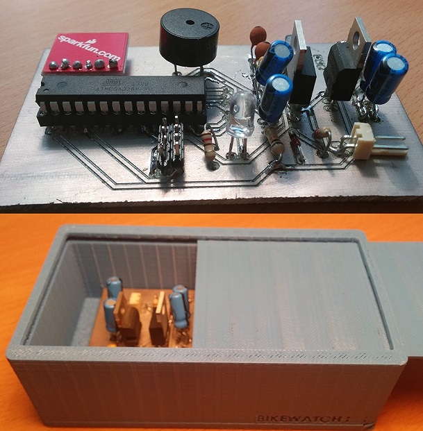

Projects
The following are some of my most recents projects
Data Science - Because drinking can help you learn too!
The following was the final project for a Data Science course at Drexel University. The objective was to set up a Shiny application where a data base could be hosted and analyzed in real time. The application can be accessed HERE.
BandAPP: Real-time monitorization of respiration rate with Augmented Reality
BIKEWATCH - Protecting your bike was never this easy!
Bikewatch’s objective is to ensure the security of Bike users at the Polythecnic University of Madrid. In order to do so, a device based on Arduino has been developed. It reads an accelerometer signal and decides whether there is someone trying to steal our bicycle or it is just the wind that is moving it. In case the device detects a thief, it sends a warning using the university's WiFi. By doing so, users can check if anything has happened to their bicycle in both Bikewatch's webpage and also in Bikewatch's APP.
Methodology for optimizing the design of an offshore wind turbine Jacket
This undergraduate project is focused on the design analysis of a jacket. A jacket is one of the most promising substructures for offshore wind farms in the short term. Using this analysis, the obtective of the project was to optimize the design, taking into consideration the minimization of the total costs of building the jacket and also its geometry.